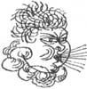
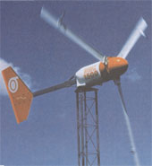
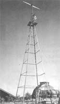

ENERGY &ENVIRONMENT
Think you know about wind power? Noisy? Unreliable? Inefficient? Well, the newest turbine generation has finally come of age.
Mark Mein and Ellen Davis have been living with solar-generated electricity for 10 years. They have no utility power at their house. Instead, they have 15 solar photovoltaic (PV) panels that provide electricity for them and their seven-year-old son. However, the PVs alone did not provide enough electricity during the dark midwinter period and they found themselves grudgingly relying on their gasoline generator from November through January. In October of 1992, they decided to move away from this dependence on fossil fuels and to take advantage of the other renewable energy source they had overhead: the wind.
As Mark said, "I wanted to vote with my dollars for the kind of energy picture I want to see in the U.S. and the world." So Mark and Ellen bought a 1-kW wind turbine to help out their solar system on cloudy days. While before they might have used about 50 gallons of gasoline a year to provide backup power, with their wind generator they use only 20.
Their wind/PV system provides enough electricity to run their "typical, low-energy" house. This includes lights, TV, VCR, stereo, washing machine, refrigerator, freezer, convection oven, water pump, hand-held power tools, and a variety of other small appliances. Mark thinks that if they did not have a renewable energy system at their house, they would be burning $500–600 worth of gas each year.
Like Mark and Ellen, thousands of people across the country are using wind power to generate electricity. Some of them do it to save on utility bills, others to decrease dependence on fossil fuels, and still others because they have no other energy option. Together they have forged a radical change in how wind power is perceived.
Wind power has been an important source of energy in the United States for centuries. Over eight million mechanical windmills have been installed in America since the 1860s, and thousands are still in operation across the West. Their main function was to pump water, not to provide the kind of fossil fuel-replacing help that we need the most.
It wasn't until the 1920s that wind-generated electricity took off - literally. Mick Sagrillo, president of Lake Michigan Wind & Sun, explains that it all began with the airplane. The propeller was discovered to be not only an efficient way of producing thrust, but it also drove an electrical generator far better than a mechanical water wheel, which is very similar to what the earliest wind generators used. As the propeller developed, so did generating stations on the ground.
The radio was wind power's second ally in the first half of this century. Farmers and ranchers were as dependent upon radios for critical weather information in the 1930s as they are today. Without grid electricity, people listened to battery-powered radios that weren't particularly dependable and needed frequent recharging. Each charge meant a long trek to town and a few days with no radio. However, a small 6-V wind generator provided enough electricity to keep the battery continuously charged, with power to spare. By the 1930s, wind-charged radios were hot items across the Great Plains.
In time, the 6-V radio chargers were replaced by 32-V generating turbines, and thousands of homes gained access to power they had never before imagined possible. Wind generator companies sprung up all over America. However, with the passage of the Rural Electrification Act of 1936, the wind industry was driven out of business. By the 1950s, government policies favoring utility lines and fossil-fuel plants left the wind industry crippled. With the coming of the energy crisis in the 1970s, that trend began to reverse. Between 1976 and 1990, over 5,000 small wind systems were installed at individual homes in America.
Wind power is a form of solar energy produced by the uneven heating of the earth's surface. It is a highly variable source of energy, as anyone who has failed to keep a kite aloft or battened down for a hurricane will attest.
Although it's an energy source that is almost impossible to regulate, wind power is democratic. Everyone gets some and it is free to all. Nobody owns it. It is also a clean technology, emitting no pollutants as it transforms wind into electrical power. And it is the cheapest energy technology we have today. In some ideal wind locations, the cost of wind-generated electricity is just 5 cents per kilowatt-hour. Anyone who has paid a utility bill knows that it doesn't get much cheaper.
There are many places across the United States that are ideal wind sites. Wyoming, Montana, South Dakota, North Dakota, Kansas, Nebraska, and Minnesota offer some of the most promising locations for wind power. South Dakota, the "Saudi Arabia of wind energy," actually has enough wind resources to provide half of the electricity for all of America. There are also pockets of ideal wind sites scattered throughout the country. You can find a place where wind power is economical in Arizona, Florida, New York, Vermont, and, in fact, in almost all 50 states.
Few people choose to power their entire household with the wind. In many instances, wind blows stronger during the winter months, leaving homesteaders to devise an alternative generating device for the summer. Hybrid systems, like Mark and Ellen's PV/wind system, are an ideal solution and there are thousands like them across America.
Another hybrid system is a utility-tied configuration. In this system there are no batteries. The utility acts as storage. Most of your appliances are run off grid power. However, when the wind blows, you sell energy back to the utility. Wouldn't it be nice to receive a check from the local utility company rather than a bill?
After 2 years of powering our remote home on a small generator, my husband John and I were desperate. We had to eliminate the noise, gasoline, oil changes, and fumes or finally admit that what was originally envisioned as a conscientious attempt at energy self-sufficiency was turning into a terrific nuisance. One morning after we stepped outside to get a soul full of fresh air and instead caught yet another mouthful of exhaust, we contacted a couple of wind turbine manufacturers for specifications and wind data. Their charts and graphs, spread out over the kitchen table, provided information about equipment operation and wind velocity. Financial resources dictated that we move slowly, but we were determined to get moving.
One year later, John and I enjoy a rural life-style in the Tehachapi mountains with modern conveniences ...and no fumes. We convert both wind and solar power to 110-V household current. We also have a backup generator - just in case Mother Nature takes a rest. Our primary electrical supply is generated by a 1.5-kW Bergey wind turbine, mounted on a 50-foot, old-fashioned, stock tank windmill. The turbine is a 24-hour renewable source and the solar panels complement the power system on sunny days. During winter, solar benefts are limited by shorter days, but the wind is present across our mountains.
Our refrigerator, heaters, and water heater run on propane gas. On household current (stored in batteries and transformed from 24-V DC power to 110-V AC for the house outlets through an inverter), we operate a color TV, VCR, computer, printer, washer, dryer, 1,500-W hair dryer, water well and water pressure pump, garage door opener, water filtration system, and outdoor lighting.
But how did we get there?
Our first consideration was the tower. Typically, turbine manufacturers design their mounting plates to conform to the tower top. For example, Bergey uses the Rohn guyed-lattice tower, whereas World Power uses a guyed-pole tower. What this means is that you are something of a captive audience, having to buy a turbine specifically made for certain towers. And they don't come cheap.
The giant steel frame must be a minimum of 50 feet tall to reach stable air and preferably taller to ensure unobstructed airflow. It's hoisted to an upright position and stabilized with numerous guy wires; the turbine is then lifted on top by a crane (only experienced folk dare use a gin pole). The rotor and tail are installed in place and final electrical connections are made. Now, all that's required is a 7.5-mph start-up wind.
Maintenance schedules vary according to turbine design. Some towers are designed to be lowered to the ground for turbine maintenance rather than making you climb to the top. Contrary to some manufacturers' contentions though, lowering a 50–100-foot tower for any reason is no small job. The guy wires must be released and there must be adequate ground clearance and equipment with which to lower it. Maintenance is best left to the qualified and brave who are equipped with safety gear.
Now, that's how it should be done. Then there's the way we did it. We bought a 75-year-old, 4-legged, angle-iron windmill tower with lots of western character and no guy wires. We constructed two pivoting legs to tilt the tower-each in 1,500 pounds of concrete. The other two legs locked into place (see photograph).
We ordered a World Power Whisper 1-kW turbine and modified the tower top with a 2-inch pipe according to specifications. We assembled, wired, and mounted the Whisper before we raised the tower. Neighbors came to lend a hand and we pushed it up with our tractor. We flipped it on with ceremonious gesture - and at last it was up and working! Well, Murphy (and his Law) apparently had taken residence at our place. The blades were out of balance and the generator was shimmying...a lot.
We ordered a new set of blades and installed them without lowering the tower. Now it spun smoothly and we had more electricity than we could use - until 3 months later, when we spotted the tail lying on the ground and noticed that the nose cone was cracked. We learned that World Power previously had problems with the tail and nose cone design. They offered to replace the turbine , but we felt the Whisper just wasn't up to the challenge. We lowered the tower, removed the turbine, and shipped it back. World Power refunded our money. Based upon this experience, we always recommend that anyone who is considering a wind turbine ask the manufacturer for references for people who have had that model turbine in service for a couple of years in a location with similar wind conditions.
Taking our own advice, we located Ed Wulf, a nearby resident who had a Bergey. He said it would "withstand our brand of wind." After much conversation, we ordered Bergey's BWC 1500, a 1.5-kW wind-power generator. It has three blades for better balance and turns out of the wind at 120 mph. This time around, we had the tower top configured by a technician who maintains 600-kW commercial turbines atop 160-foot towers. He also assembled and installed the turbine.
We built an outbuilding beside the tower to house the energy system. John designed it and had an electrician wire it to meet California's building code. Power generated by the turbine is processed through a controller and stored in a 24-V DC, deep-cycle battery array. From the batteries, a sine wave inverter supplies our 3,100-square-foot home and a 1,200-square-foot garage with 110-V AC electricity.
When the batteries are fully charged, power can be manually diverted to start the well pump to top off the 5,000-gallon water storage tank. If the inverter fails, a manual breaker switch automatically shifts to the generator. The system also operates a water filtration system.
The batteries are isolated in a well-vented, fire-walled room within the power center. Lead acid batteries are the weakest link of any alternative energy system; technology has simply not advanced to produce an affordable, long-lasting battery.
Our system is more than adequate, but this does not mean that it has no limitations. We are careful to turn lights off and wash only full loads of laundry. I sometimes iron clothes at midnight because that's when the excess power is available. But we have developed a sixth sense about our output capabilities ties. We even enjoy 27-W fluorescent lights (equivalent to a 100-W incandescent bulb), low-voltage garden lights, and motion detectors.
The cost for our hybrid system is about $10,000. Yes, it's a lot of money, but we didn't spend it all at once. We began with a 5-kW generator, inverter, and batteries. When we could afford it, we upgraded to a 10-kW generator. Then we bought the windmill and gradually added PV panels.
Statistics indicate that the operating cost of a 1,500-W wind system is $1.93 per watt. But the payoff for nonpolluting electricity cannot be equated in dollars. Its value is realized in terms of self-sufficiency and quality of life.
A turbine converts the wind into electrical power. It consists of propellerlike blades (the rotor) and a generator. The rotor is what captures the energy of the wind and converts it into motion to drive the generator. A properly designed rotor turns the generator fast enough to produce maximum power but not so fast that it presents a danger to the system.
A turbine must have a clear shot at the wind, so a well-designed tower is crucial for an effective system. Building too short a tower is the most common mistake home owners make. The higher one goes above ground, the stronger and "smoother" the wind is. Smoother air means air that is free from the turbulence that occurs from obstructions such as trees and buildings. It is always a better investment to get more tower instead of a larger wind turbine. Mark feels that if he had gone only 20 or 30 feet higher in his 70-foot tower, he could almost double the output of the generator. As a rule of thumb, the tower should be at least 30 feet above any obstacles within 500 feet.
Before you run out and install a tower on your roof, cleverly thinking that you can cut 30 feet off your tower height, remember that towers vibrate a lot . The vibrations could seriously damage both your house and your nerves. Wind towers should always be installed on the ground.
Since the wind does not always blow when you want to listen to your stereo, an "off-grid" system typically includes turbine-charged batteries so that electricity is available at any time throughout the day, plus a regulator to protect the batteries from overcharging. A battery system will usually also have an inverter to change the DC electricity from the turbine and batteries into AC electricity that most of our appliances consume.
How much power is available from the wind? The main factor is speed. In 1927 Alfred Betz of Germany computed a formula for how much power the wind can generate. He concluded that the power in the wind is proportional to the cube of the wind speed. For example, if the wind speed doubles, the available power increases eightfold. That is, a 20-mph wind will yield eight times the power of a 10-mph one.
Another important factor in the amount of power possible is the area of the rotor. A larger rotor will intercept a larger area of wind, thus providing more power. Although we do have control over what size rotor we use, we don't have control over the wind speed. So it is essential to know how much wind is necessary for a wind system to be practical.
Since wind speeds change constantly (changes of up to 30 mph are possible in 5 seconds or less), it is important to talk of average wind speeds. Areas with average monthly wind speeds of 12 to 16 mph or above are excellent wind sites. For a utility-tied system, speeds of 9 mph or above are economical. Finally, for places where there is no utility and wind is your only option, areas with very low wind speeds might still be more economical than relying on a diesel generator.
How do you know what your average wind speed is? Although wind speed data are easily accessible for many locations throughout the United States, it might not be accurate for home wind applications. Most of the wind data are collected at airports, which are generally built in places with the least amount of wind. According to Mick, "unless you live in a hole or the middle of the woods, you can expect at least a 1- to 4-mph increase above airport data." If you have any doubts, do a little studying on your own. Anemometers can measure wind speed at any location (and some simple hand-held models can be purchased for as little as $15). They should be positioned as high as the wind system tower will be. To get an estimate of your average wind speed, you can measure your site twice a day for 2 weeks. Then call the local weather bureau and find a ratio between your readings and their daily measurements. You can then extrapolate to estimate your wind site year-round. Once the average wind speed is known, it is a simple matter to determine how much energy is available to you.
But that is only half of the equation. You also need to know how much energy you use. And for a wind system (or any renewable energy system, for that matter) to be practical, it is necessary to use energy efficiently. That means no electric stove, electric water heater, or electric clothes dryer. Solar thermal energy or propane makes more sense for those applications. You can run the majority of your current appliances, but energy-efficient models will be of tremendous assistance in the long run. Reducing your need for electricity will do more than anything else in making your system affordable.
Once the wind system is up and running, your utility bills will be substantially lower, or even nonexistent. However, energy doesn't come free. Like any other renewable energy device, the cost of the equipment, or the first cost, is what will dig into your wallet. Mark and Ellen's 1-kW system costs about $4,500. A third of the cost was the turbine, a third was the tower and installation, and the last third was miscellaneous hardware. They were lucky in that they had the batteries and inverter already in their PV system.
However, a typical 500 – 600-W system can run about $6,000, an amount nearly equivalent to that of a similar solar stand-alone system. The wind turbine will be between $800 and $1,000; the tower, up to $3,000; the batteries, $800 to $1,600; and the inverter, controller, and wiring, $1,000 to $2,000. A utility-tied system will be even cheaper because it doesn't require batteries.
Six grand worth of up-front costs is a considerable sum, but it is crucial to take into consideration that in 6 or 7 years the amount of money saved from not paying utility bills will pay for the entire system. After that, the investment will yield nothing but savings. Better yet, maintenance costs for modern generators are very low, and the "fuel" is free. Depending upon the type chosen, batteries will need to be replaced approximately every 10 years.
In remote locations where there is no utility, the payback will come even sooner. Faced with the overwhelming cost of extending grid power to a remote home (see "Living off the Grid," issues #141–143), it is usually cheaper to install a independent or hybrid wind system at a relatively good wind site than to extend the transmission lines or rely on a diesel generator. And, of course, the satisfaction of generating your own electricity from a nonpolluting energy source has no price value.
Remember that wind power does have some practical considerations. In the past, turbines were noisy. Fortunately, the newer turbines are quieter. Today, noise is rarely a problem in house-sized systems. And wind turbines are definitely quieter than listening to a generator all day.
It is also hard to ignore the visual impact. Many people do not want to look out their windows and see their neighbor's wind tower. But how many of us have become accustomed to the plethora of utility lines outside of our windows and above our heads every day? To many, a wind tower is a beautiful symbol of energy independence, a sculpture in motion.
Wind machines are not for everyone, however. Not only is it a mechanical device that occasionally needs maintenance, but it is a mechanical device that is very high up in the air. If the idea of climbing a 100-foot tower once or twice a year sends you groping for the Dramamine, you might want to reconsider your energy options. But if you have a maintenance contract with a local wind dealer, you can enjoy your system from the safety of the ground. A tilt-up tower is another option. You can lower your tower to do any work or inspection and tilt it back up without lifting a foot.
Before you put up your wind tower, you should research zoning ordinances, building codes, and any legal requirements that might affect your installation.
Some ordinances have height restrictions and setback requirements (the minimum distance a structure can be from the property line). These stumbling blocks can generally be overcome. You might have to apply for a variance or convince people that a wind system should be classified under the same category as communication towers for TVs, CBs, and ham radios. Either way, do your homework and find out the hurdles that must be overcome before buying your tower.
Now that you have measured your site, picked out the right system, and obtained any necessary permits, you are ready to get your system up and running. The easiest thing to do is call your local Mick Sagrillo and have a trained crew do the work for you. Installing the tower, raising the wind generator on top of it, wiring the system, and installing the batteries is not a simple weekend project.
Mick, however, has no qualms about people installing their own system. In fact, he encourages it: "If you get your hands dirty, you have more vested interest in making sure it works properly." However, he discourages people from building their own tower. The tower is a critical component and a poorly built one can actually be deadly.
There are various ways to put the actual wind generator in place. You can use a crane or a gin pole, which is a small crane that attaches to the top of the tower. The generator is usually raised first and the rotor and tail vane follow. Once the generator is in place, it must be checked to see if it is level and the rotor blades are tracking properly. If the unit is out of balance it will vibrate, increasing noise and losing power. However you put up your system, it is strongly recommended that you work with an expert. A poorly installed or wired system can mean major damage in the first big wind.
Once your system is operating, maintenance is minimal. Mark climbs his 70-foot tower twice a year to lubricate and inspect the generator ("not the most pleasant task"). You can do this yourself or hire a local dealer. In an off-grid system, the batteries will need some attention. They must be checked periodically and you may need to add distilled water to them a couple times a year.
But to the thousands of people living with wind systems, this is a small price to pay. And once your system is spinning that wind into electricity, you might think differently the next time you feel a cool breeze or even a strong gale. That gust of air means that the days of needless and spiraling utility expenses are over.
Workshops:
Solar Energy International, P.O. Box 715, Carbondale, CO 81623;303-963-8855.
Organizations
American Wind Energy Association, 122 C St. NW, 4th floor, Washington, D.C. 20002; 202-383-2500.
Books
Wind Power for Home & Business (Chelsea Green Publishing Co., Chelsea, Vermont, 1993) by Paul Gipe.
Wind Power for the Homeowner (Rodale Press, Emmaus, Pennsylvania, 1981) by Donald Marier.
Wind Manufacturers
Lake Michigan Wind & Sun, E3971 Bluebird Rd., Forestville, WI 54213; 414-837-2267.
Bergey Windpower Co., 2001 Priestly Ave., Norman, OK 73069; 405-364-4212.
Southwest Windpower, 1855 Kaibab Lane #5, Flagstaff, AZ 86001; 602-779-9463.
World Power Technologies, 19 N. Lake Ave., Duluth, MN 55802;218-722-1492.
Wind Baron Corp., 3920 E. Huntington Dr., Flagstaff, AZ 86001; 602-526-6400.
|
 |
 |
|
|
 |
|
|